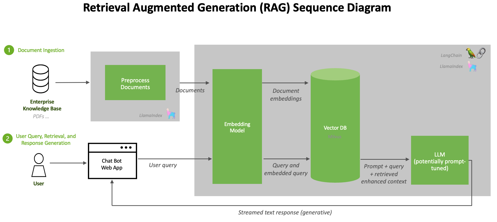

The best students are not the ones who memorize the most. They are the ones who know exactly which book to open and which page to turn to.
RAG, Well-Read AI Agent
RAG bridges the gap between what an LLM knows and what it needs to know. Rather than encoding all knowledge in model parameters, RAG retrieves relevant documents at inference time and injects them into the prompt. The promise is appealing (reduced hallucination, up-to-date information, domain-specific expertise, and the option of source attribution), but the gains are not automatic: a misconfigured RAG pipeline can increase hallucination by injecting irrelevant or contradictory passages, and citations themselves can be fabricated (see Section 32.5). Understanding the fundamental architecture, its failure modes, and when to choose RAG over fine-tuning is the foundation for everything else in this chapter. The embedding and vector database infrastructure from Chapter 31 provides the retrieval backbone that RAG depends on.
Prerequisites
RAG builds on the embedding and retrieval infrastructure covered in Chapter 31. You should understand how text embedding models produce dense vectors (Section 31.1), how vector indexes enable fast similarity search (Section 31.3), and how documents are chunked for retrieval (Section 31.6). Familiarity with LLM API patterns from Section 11.1 will help you understand the generation side of the pipeline.
For framework-level RAG pipelines (LangChain, LlamaIndex), see Section 36.2.
32.1.0 The Knowledge Storage Spectrum
For the evaluation methodology of RAG specifically (faithfulness vs answer relevance, golden-set construction, retrieval@k vs end-to-end metrics), see Section 42.1: LLM Evaluation Fundamentals.
A team upgraded their embedding model from text-embedding-ada-002 to text-embedding-3-small in a single PR, expecting "better embeddings = better retrieval." Recall on their golden set dropped 18 percent overnight. Root cause: the new model produced vectors with different angular geometry, so a query embedded with v3 found near-zero cosine similarity against documents still embedded with v2 in the index. They had not re-embedded the corpus. Lesson: embedding models are part of the retrieval contract, not a swappable hyperparameter. Either re-embed everything atomically or maintain dual indices during a migration (see Production Pattern P2 in Chapter 35's LLMOps coverage).
Measure Recall@k and MRR for the retriever on a golden query set, independently of end-to-end answer quality. A capable generator can partially compensate for poor retrieval, masking the underlying problem until the generator changes. Run retrieval evals on every index rebuild, embedding-model upgrade, or chunking-strategy change. Keep a small (200-query) retrieval golden set; treat a Recall@5 drop >5pp as a deployment blocker.
Team C built a RAG system over their company's 5,000-page policy manual. It worked great in demo and during pilot. Six months later, customer-facing support was citing answers that contradicted the current policy. The chunks in the vector store were stale by months. Two compounding failures: the document-ingest job was scheduled but the IAM role had been rotated and silently failing for 11 weeks (monitoring caught the silence but not the failure), and even if it had run, the chunking strategy split policy paragraphs in half, the retrieved chunk often contained the policy without the "as of (date)" preamble that gave it temporal meaning. Fix: liveness checks on the ingest pipeline + a chunking strategy that preserved the date stamp in every chunk + a recency-bias rerank step. Lesson: RAG is two engineering systems (ingest + retrieval) and both fail silently if you don't monitor both.
The deep treatment of the prompt-vs-RAG-vs-fine-tune decision tree lives in Section 16.1. The discussion below focuses on what changes when retrieval is on the table.
RAG is one of five places you can put knowledge in an LLM system. Practitioners regularly conflate them and ask the wrong question ("RAG or fine-tuning?" when the right answer is often "long context" or "agent memory"). This bridge section, referenced from chapters 14, 18, 19, 20, makes the five-way decision explicit.
Every LLM system stores knowledge somewhere. The choice is not binary; it is a 2-D spectrum with two axes:
- Access latency: how fast can the model use the knowledge during inference? Parametric weights are instantaneous (no extra round trip). Long-context windows pay a quadratic attention cost. RAG pays a vector-search cost. Agent memory pays a multi-hop reasoning cost.
- Knowledge currency: how easily can the knowledge be updated? Parametric weights require retraining. Long-context windows expire when the conversation ends. RAG and agent memory can be updated continuously without touching the model.
| Mechanism | Where it lives | Access latency | Knowledge currency | Verifiability | Best for | Chapter |
|---|---|---|---|---|---|---|
| Parametric (weights) | Model parameters | Instantaneous | Static (frozen at training) | Hard (no source attribution) | General reasoning, common knowledge, learned style | Ch 6 pretraining; Ch 15 fine-tuning |
| Long-context window | The current prompt | Fast (read once per turn) | Single-turn fresh | Easy (sources visible in prompt) | Single document Q&A, code refactoring, transcripts | Ch 9 long-context serving |
| RAG (retrieval) | External vector index + docs | Medium (vector lookup + injection) | Updatable in real time | Easy (cite retrieved chunks) | Open-domain Q&A, knowledge bases, fresh facts | Ch 19 RAG (this chapter) |
| Agent memory | External DB / vector store / files | Slow (multi-hop reasoning) | Updatable per interaction | Medium (memory tags + provenance) | Personalization, long-running tasks, conversation history | Ch 21 agent memory systems |
| Tool returns | Live API / function call | Slow (network / compute) | Real-time (live data) | Easy (tool name + args logged) | Calculations, real-time prices, weather, web search | Ch 22 tool use |
Three practical implications follow from this spectrum:
- The right answer to "RAG or fine-tuning?" is usually neither. Most knowledge that practitioners want to add to a model is best stored as RAG (current, verifiable) or in the prompt (one-shot, freshest). Fine-tuning is for changing behavior, not for adding facts. See Section 16.1's adaptation decision tree.
- Long-context windows are not a replacement for RAG. Even at 1M tokens, models exhibit the "lost in the middle" effect (Liu et al. 2023): performance is best for information at the start or end of context, with up to 40% accuracy drop in the middle. RAG with smart chunking can outperform a stuffed long context on multi-hop questions.
- Agent memory and RAG are not the same thing. RAG retrieves documents by similarity. Agent memory retrieves experiences (past conversations, prior tool calls, learned user preferences) by relevance to the current task. They use similar infrastructure (vector stores) but answer different questions. See Section 26.6.
32.1.1 Why Retrieval-Augmented Generation?
RAG is the field's clearest example of Thesis 1 (Compression-Communication): it is a deliberate decision not to compress every fact into the model's parameters and instead retrieve them at inference time. It is also the second pole of Thesis 3 (Two×Two Axes) on the knowledge dimension: parametric knowledge is fast but stale; non-parametric (retrieved) knowledge is slower but current. The Knowledge Storage Spectrum, introduced in Section 18.1's adaptation decision tree, makes the framework explicit. Every "should I use RAG, fine-tune, or long-context?" question in this chapter is really "where in this spectrum does my workload sit?" Refer to the Conceptual Map for the spine.
Large language models store knowledge implicitly in their parameters during pretraining data. This parametric knowledge has three fundamental limitations. First, it has a knowledge cutoff: the model knows nothing about events after its training data was collected. Second, it is incomplete: no model can memorize every fact from its training corpus, especially rare or domain-specific information. Third, it is unverifiable: when a model generates a claim, there is no way to trace that claim back to a specific source document.
Retrieval-Augmented Generation, introduced by Lewis et al. (2020), addresses all three limitations by adding an explicit retrieval step before generation. The model receives both the user's query and a set of retrieved documents, then generates a response grounded in the retrieved evidence. This approach combines the generative fluency of LLMs with the factual precision of information retrieval systems.
Think of it like the difference between a closed-book exam and an open-book exam. A standard LLM takes a closed-book exam: it can only answer from what it memorized during training. RAG gives the model an open book. It can look up relevant passages before answering, cite its sources, and say "I could not find that information" when the book does not cover the topic. The result is answers that are more accurate, more current, and more trustworthy.
The original RAG paper by Lewis et al. (2020) was published while GPT-3 was still brand new. The authors could not have predicted that within four years, "just add RAG" would become the default answer to almost every enterprise LLM question.
RAG formalizes a distinction that epistemologists have debated for centuries: the difference between knowledge stored "in the head" (parametric) and knowledge accessed "from the world" (non-parametric). In philosophy, this parallels the debate between rationalism (knowledge derives from innate structures) and empiricism (knowledge derives from external evidence). A pure LLM is a rationalist system: everything it knows is baked into its parameters. RAG introduces an empiricist channel, grounding the model's responses in external evidence that can be verified, updated, and audited. This architectural choice has profound implications for trust and accountability. When a RAG system provides citations, it enables the user to verify claims against sources, a form of epistemic transparency that purely parametric models cannot offer. The "open book exam" analogy is precise: it shifts the model from claiming to "know" things to demonstrably "looking them up."
32.1.1.1 The Core RAG Loop
Before building anything complex, implement the naive RAG loop in 20 lines of code and measure its accuracy on 50 real questions from your domain. In many cases, this simple pipeline answers 70% of queries correctly. That baseline tells you exactly how much the advanced techniques in the rest of this chapter are worth to your use case.
Every RAG system follows the same fundamental loop. Algorithm 1 formalizes the naive RAG pipeline, which serves as the foundation for the more advanced retrieval patterns covered later in this chapter.
The naive RAG pipeline: encode the query, retrieve relevant documents, augment the prompt, and generate a grounded response.
Input: user query q, knowledge base KB, embedding model E, LLM G, top-k parameter k
Output: grounded response with citations
1. Encode: q_vec = E(q) // embed the query
2. Retrieve: docs = top_k_similar(q_vec, KB, k) // vector similarity search
3. Augment: prompt = format(q, docs) // insert docs into prompt template
e.g., "Given the following context: {docs}\n\nAnswer: {q}"
4. Generate: response = G(prompt) // LLM generates grounded answer
5. return response (with source citations from docs)The simplicity of this pipeline is both its strength and its limitation. Each stage introduces potential failure points: the query embedding may not capture intent (step 1), retrieval may return irrelevant documents (step 2), the prompt may exceed the context window (step 3), or the LLM may ignore the retrieved context (step 4). The rest of this chapter addresses these failure modes systematically. illustrates the four stages of a naive RAG pipeline.
A widespread belief is that adding retrieval to an LLM pipeline eliminates hallucination. In reality, RAG reduces hallucination but does not eliminate it. The model can still hallucinate in several ways: it may generate claims not supported by the retrieved context (unfaithful generation), it may cite a real source while misrepresenting what that source says (citation hallucination, covered in Section 32.5), or it may retrieve irrelevant documents and then generate plausible but incorrect answers from them. Treating RAG as a hallucination "fix" leads to false confidence. Every production RAG system needs a faithfulness verification layer.

32.1.1.2 Reference Implementation: HuggingFace RAG (DPR + BART)
Before stitching together a custom retriever and generator, it helps to look at the canonical reference implementation that the Hugging Face transformers library exposes as a single model. The RagTokenForGeneration class wraps DPR (Dense Passage Retrieval, Karpukhin et al., 2020) as the retriever and BART (Lewis et al., 2019) as the generator, trained end-to-end on the original Lewis 2020 RAG paper recipe. It is the cleanest example of the bi-encoder + generator split described in Section 31.1.
DPR is a dual encoder: two BERT towers, one for questions and one for passages, trained with an InfoNCE contrastive loss against in-batch negatives so that a question vector ends up close to the vector of any passage that answers it. At indexing time the passage encoder runs once per corpus chunk and the vectors go into FAISS; at query time only the question encoder runs, exactly the asymmetry that makes retrieval cheap. BART then takes the top-$k$ retrieved passages, concatenates each with the question, and marginalizes the encoder-decoder output across the passages to produce the answer. The four-line HF version is:
from transformers import RagTokenizer, RagRetriever, RagTokenForGeneration
tok = RagTokenizer.from_pretrained("facebook/rag-token-nq")
retriever = RagRetriever.from_pretrained(
"facebook/rag-token-nq", index_name="exact", use_dummy_dataset=True,
)
model = RagTokenForGeneration.from_pretrained("facebook/rag-token-nq", retriever=retriever)
ids = tok("Who founded the linux kernel?", return_tensors="pt").input_ids
print(tok.batch_decode(model.generate(ids), skip_special_tokens=True))retriever runs DPR over an indexed Wikipedia dump and feeds the top-$k$ passages into BART; the whole pipeline was end-to-end fine-tuned in the original Lewis 2020 paper.Production RAG stacks rarely ship the exact facebook/rag-token-nq checkpoint, but the architecture (frozen passage index, lightweight query encoder, generator that fuses the top-$k$) is the template every modern stack inherits. The DPR question encoder lives on as a strong bi-encoder baseline that is still competitive with newer sentence-transformer models on the Natural Questions benchmark.
The DPR training objective is the InfoNCE contrastive loss with in-batch negatives. For a mini-batch of $B$ (question, positive-passage) pairs, each question $q_i$ uses the other $B-1$ passages in the batch as cheap negatives:
Here $\mathrm{sim}(q, p) = q \cdot p$ is the dot product, $p_i^{+}$ is the gold passage for $q_i$, and $\tau$ is a temperature (DPR sets $\tau = 1$ and relies on the unnormalized similarity scale). Larger batch sizes mean more (and harder) negatives at no extra annotation cost, which is why the original DPR paper trained with $B = 128$ on 8 GPUs. The same recipe powers every modern sentence-transformer (SBERT, E5, BGE), with refinements like hard-negative mining and longer context windows.
32.1.2 The Ingestion Pipeline
Before retrieval can happen, documents must be processed and indexed. The ingestion pipeline transforms raw documents (PDFs, web pages, databases, Markdown files) into searchable chunks stored in a vector database. The quality of this pipeline directly determines the quality of retrieved results, making it one of the most important components of any RAG system.
32.1.2.1 Document Loading and Preprocessing
The first step is loading documents from their source format and extracting clean text. This involves handling diverse formats (PDF, HTML, DOCX, CSV), removing boilerplate content (headers, footers, navigation), preserving meaningful structure (headings, tables, lists), and extracting metadata (title, author, date, source URL) for later filtering.
32.1.2.2 Chunking Strategies
Raw documents are typically too long to fit in a single retrieval result. Chunking splits documents into smaller segments that can be independently embedded and retrieved. The choice of chunking strategy profoundly affects retrieval quality: chunks that are too small lose context, while chunks that are too large dilute relevance and waste context window space.
Common Chunking Approaches
This snippet compares fixed-size, sentence-based, and recursive chunking strategies for splitting documents.
# Two chunking primitives: fixed-window-with-overlap and heading-aware.
# tiktoken gives us exact token counts so chunks fit a known embedding budget.
import tiktoken
def chunk_by_tokens(text: str, max_tokens: int = 512, overlap: int = 50) -> list[dict]:
"""Sliding-window chunking with token-level overlap to avoid splitting facts."""
encoder = tiktoken.encoding_for_model("gpt-4o")
tokens = encoder.encode(text)
chunks = []
start = 0
while start < len(tokens):
end = start + max_tokens
window = tokens[start:end]
chunks.append({
"text": encoder.decode(window),
"token_count": len(window),
"start_token": start,
})
start = end - overlap # slide window, keep `overlap` tokens of context
return chunks
def chunk_by_structure(markdown_text: str) -> list[dict]:
"""Split a markdown doc on heading boundaries; each section becomes one chunk."""
sections, current = [], {"heading": "", "content": []}
for line in markdown_text.split("\n"):
if line.startswith("#"):
# A new heading closes the previous section.
if current["content"]:
sections.append(current)
current = {"heading": line.lstrip("# "), "content": []}
else:
current["content"].append(line)
if current["content"]: # flush the trailing section
sections.append(current)
return [
{"text": "\n".join(s["content"]), "metadata": {"heading": s["heading"]}}
for s in sections
]chunk_by_tokens (fixed-window with overlap) and chunk_by_structure (split on headings), illustrating the granularity-versus-context tradeoff. The structural variant preserves heading metadata so retrieval can surface section context alongside the chunk text.Code Fragment 32.1.1 hand-rolls both chunk_by_tokens and chunk_by_structure to make the granularity-versus-context tradeoff concrete. When you want the token-window behavior without maintaining the loop yourself, langchain_text_splitters.RecursiveCharacterTextSplitter is the standard production replacement; Section 16.7 shows it in context.
The optimal chunk size depends on your use case. For question-answering, 256 to 512 tokens works well because each chunk should contain a single coherent answer. For summarization, larger chunks (1024+ tokens) preserve more context. Always include overlap between consecutive chunks (10 to 15% of chunk size) to avoid splitting important information across chunk boundaries. For a deep dive into chunking approaches, see Section 31.6.
Beginners often default to chunk_size=128 or even 64, thinking finer-grained chunks yield higher-precision retrieval. In practice, very small chunks strip away the surrounding context the embedding model needs to encode meaning, so "Q3 revenue" without "Acme Corp" or "fiscal 2024" embeds as a near-empty vector that matches everything and nothing. Below roughly 200 tokens, retrieval quality degrades sharply on most benchmarks. Start at 512 with 50-token overlap and only shrink if your eval (not your gut feeling) tells you to.
Overlap helps, but a 50-token tail does not rescue a chunk that splits a numbered list, a table row, or a multi-sentence claim in two. The retrieval system will surface the half that matches the query lexically, and the LLM will hallucinate the missing half rather than admit the chunk is incomplete. Use structure-aware splitters (markdown headings, HTML tags, code blocks) whose boundaries align with the document's logical units; treat fixed-size windowing as a fallback for unstructured prose only.
32.1.2.3 Embedding and Indexing
After chunking, each chunk is converted into a dense vector using an embedding model and stored in
a vector database. The embedding model's quality is critical: it determines whether semantically
similar queries and documents will have similar vector representations. Popular embedding models
include OpenAI's text-embedding-3-small, Cohere's embed-v3, and open-source
options like BAAI/bge-large-en-v1.5.
# Ingest a list of text chunks: embed via the OpenAI Embeddings API,
# then persist them in a local ChromaDB collection configured for cosine similarity.
from openai import OpenAI
import chromadb
client = OpenAI()
chroma = chromadb.PersistentClient(path="./chroma_db")
collection = chroma.get_or_create_collection(
name="documents",
metadata={"hnsw:space": "cosine"}
)
def ingest_chunks(chunks, source_doc):
"""Embed and store chunks in ChromaDB."""
texts = [c["text"] for c in chunks]
# Batch embed (max 2048 texts per API call)
response = client.embeddings.create(
model="text-embedding-3-small",
input=texts
)
embeddings = [item.embedding for item in response.data]
# Store with metadata for filtering
collection.add(
ids=[f"{source_doc}_chunk_{i}" for i in range(len(chunks))],
embeddings=embeddings,
documents=texts,
metadatas=[{
"source": source_doc,
"chunk_index": i,
"heading": chunks[i].get("metadata", {}).get("heading", "")
} for i in range(len(chunks))]
)
return len(chunks)text-embedding-3-small endpoint (respecting the 2048-text-per-call limit) and persisting them in a ChromaDB collection configured for cosine similarity. The metadata payload carries source and heading so later filters can scope queries to a specific document or section.For local, cost-free embeddings, sentence-transformers plus FAISS replaces the API call entirely:
# Library shortcut: local embeddings + FAISS (pip install sentence-transformers faiss-cpu)
from sentence_transformers import SentenceTransformer
import faiss, numpy as np
model = SentenceTransformer("BAAI/bge-small-en-v1.5")
texts = ["chunk one text...", "chunk two text...", "chunk three text..."]
embeddings = model.encode(texts, normalize_embeddings=True)
index = faiss.IndexFlatIP(embeddings.shape[1])
index.add(embeddings.astype(np.float32))
# Query
q_vec = model.encode(["What is the vacation policy?"], normalize_embeddings=True)
dists, ids = index.search(q_vec.astype(np.float32), k=3)
print(f"Top chunks: {ids[0]}, scores: {dists[0]}")There is a Goldilocks chunk size, and it depends on the question. Ask "when did WWII end?" and you want a 50-token chunk: short, dense, citable. Ask "why did the Treaty of Versailles cause WWII?" and you want 1000-token chapters: long, narrative, with cause-and-effect arcs. Most production RAG systems pick one chunk size and live with the mismatch, which is why every six months somebody on Twitter announces they have "finally figured out RAG" by indexing the same corpus at three sizes simultaneously, calling it hybrid chunking, and shipping a paper.
32.1.3 Naive RAG: The Retrieve-and-Generate Pattern
The simplest RAG implementation follows a straightforward pattern: embed the user query, retrieve the top-k most similar chunks from the vector database, concatenate them into a prompt, and pass the augmented prompt to the LLM. Despite its simplicity, this "naive RAG" approach delivers substantial improvements over ungrounded generation for many use cases. Figure 32.1.3b shows the complete ingestion pipeline.
# Naive RAG in three steps: vector-search the chunks, stitch them into a prompt,
# and call gpt-4o to generate a grounded answer with explicit source citations.
def naive_rag(query: str, k: int = 5) -> dict:
"""Simple retrieve-and-generate RAG pipeline."""
# Step 1: Retrieve relevant chunks
results = collection.query(
query_texts=[query],
n_results=k
)
retrieved_docs = results["documents"][0]
sources = results["metadatas"][0]
# Step 2: Build augmented prompt
context = "\n\n---\n\n".join(
[f"[Source: {s['source']}]\n{doc}"
for doc, s in zip(retrieved_docs, sources)]
)
prompt = f"""Answer the question based on the provided context.
If the context does not contain enough information, say so clearly.
Cite the source documents used in your answer.
Context:
{context}
Question: {query}
Answer:"""
# Step 3: Generate grounded response
response = client.chat.completions.create(
model="gpt-4o",
messages=[{"role": "user", "content": prompt}],
temperature=0.1
)
return {
"answer": response.choices[0].message.content,
"sources": sources,
"num_chunks_used": len(retrieved_docs)
}collection.query returns the top-k chunks plus their metadata, the prompt template stitches them into a citable context block, and gpt-4o with temperature=0.1 generates the grounded answer. The returned dict carries the sources array so callers can render attributions.The hand-rolled naive_rag above is great for understanding the loop; llama-index (v0.11+, 2024 to 2026) gives you the same loop in five lines plus first-class abstractions for ingestion, sub-question routing, hybrid retrieval, and response synthesis. The default VectorStoreIndex handles chunking, embedding, persistence, and the retrieve-augment-generate cycle, and swapping in Qdrant or pgvector is a one-line change.
Show code
pip install llama-index llama-index-llms-openai llama-index-embeddings-openai
from llama_index.core import VectorStoreIndex, SimpleDirectoryReader, Settings
from llama_index.llms.openai import OpenAI
from llama_index.embeddings.openai import OpenAIEmbedding
Settings.llm = OpenAI(model="gpt-4o-mini", temperature=0.1)
Settings.embed_model = OpenAIEmbedding(model="text-embedding-3-small")
docs = SimpleDirectoryReader("./policies").load_data()
index = VectorStoreIndex.from_documents(docs)
engine = index.as_query_engine(similarity_top_k=5, response_mode="compact")
answer = engine.query("What is our vacation policy?")The same retrieve-and-generate pipeline can be assembled in six lines using LangChain's built-in chain:
# Library shortcut: RAG with LangChain (pip install langchain langchain-openai langchain-chroma)
from langchain_chroma import Chroma
from langchain_openai import ChatOpenAI, OpenAIEmbeddings
from langchain.chains import RetrievalQA
vectorstore = Chroma(persist_directory="./chroma_db", embedding_function=OpenAIEmbeddings())
qa = RetrievalQA.from_chain_type(
llm=ChatOpenAI(model="gpt-4o", temperature=0.1),
retriever=vectorstore.as_retriever(search_kwargs={"k": 5}),
)
result = qa.invoke("What is our vacation policy?")
print(result["result"])32.1.4 Context Window Management
Modern LLMs have large context windows (128K for GPT-4o, 1M for GPT-4.1, 200K for Claude, 1M-2M for Gemini 1.5/2.5, and 10M for Llama 4 Scout), but stuffing the entire context window with retrieved documents is rarely optimal. Research has revealed important patterns in how LLMs process long contexts that directly affect RAG system design.
32.1.4.1 The Lost-in-the-Middle Problem
Liu et al. (2024) demonstrated that LLMs attend more strongly to information at the beginning and end of their context, with reduced attention to content in the middle. This "U-shaped" attention pattern means that documents placed in the middle of a long context are more likely to be ignored. For RAG systems, this implies that simply concatenating many retrieved documents can actually hurt performance if the most relevant document ends up in the middle of the context.
Picture the model as a guest at a long dinner party with twenty people around the table. It listens attentively when introductions go around the room (the start of context), perks up again for the gossip and dessert chat happening right next to it (the end of context, the most recent tokens), and somewhere in the middle of the meal it zones out, eyes glazing over while the people in the middle seats give their elevator pitches. Put the most important guest, the one with the answer your query needs, in seat 10 of 20, and the model never quite registers what they said. Liu et al. measured this directly: documents at the head or tail of context are used about 80 percent of the time, while documents at positions 8 through 12 drop to roughly 60 percent.
The practical consequence for RAG: stuffing the context window because "long-context models can handle it" is not free, the recall curve is a literal U shape across position. Three habits follow. First, retrieve fewer documents (three to five, not twenty). Second, sort by relevance and place the top-ranked chunk first so the primacy effect lands on your strongest evidence. Third, when you must include many chunks, rerank and put the marginal ones in the middle, where the model will (correctly) treat them as background.
Experiments show that LLMs correctly use information placed at position 1 or position 20 in a list of 20 documents roughly 80% of the time, but performance drops to around 60% for documents at positions 8 through 12. To mitigate this effect: (1) limit the number of retrieved documents to 3 to 5, (2) place the most relevant document first, and (3) consider reranking by relevance before context insertion.
32.1.4.2 Optimal Context Sizing
This snippet experiments with different context window sizes to find the optimal balance between recall and relevance.
# Greedy context packer: keep adding relevance-sorted chunks until the budget runs out.
# Highest-relevance chunks first so the primacy effect lands the best evidence at the top.
def build_context_with_budget(retrieved_chunks: list[dict], token_budget: int = 4000) -> tuple[str, int]:
"""Pack chunks into one context string while respecting a hard token budget."""
encoder = tiktoken.encoding_for_model("gpt-4o")
context_parts, total_tokens = [], 0
for chunk in retrieved_chunks: # Assumed pre-sorted by descending relevance
chunk_tokens = len(encoder.encode(chunk["text"]))
if total_tokens + chunk_tokens > token_budget:
break # Adding this chunk would exceed the budget; stop packing.
context_parts.append(chunk["text"])
total_tokens += chunk_tokens
return "\n\n---\n\n".join(context_parts), total_tokenstoken_budget, returning the joined context plus the running token total.32.1.5 When RAG Beats Fine-Tuning
RAG and fine-tuning are complementary approaches to adapting LLMs, not competing ones. However, understanding when each approach is more appropriate helps practitioners avoid costly mistakes. The decision framework depends on several factors including knowledge volatility, the nature of the task, and available resources.
| Factor | Favor RAG | Favor Fine-Tuning |
|---|---|---|
| Knowledge freshness | Data changes frequently (news, docs) | Stable knowledge domain |
| Source attribution | Citations required | Attribution not needed |
| Data volume | Large corpus (thousands of docs) | Small, curated dataset |
| Task type | Factual Q&A, search, research | Style adaptation, format control |
| Latency tolerance | Slight additional latency acceptable | Minimal latency required |
| Hallucination risk | Must be minimized with evidence | Acceptable with guardrails |
| Cost model | Per-query retrieval cost | One-time training cost |
In practice, the best production systems often combine RAG and fine-tuning. Fine-tuning teaches the model how to use retrieved context effectively (following instructions, citing sources, admitting uncertainty), while RAG provides the what (the actual knowledge). This combination outperforms either approach alone for most enterprise applications.
Build a naive RAG pipeline that (a) loads 5 PDFs, (b) chunks at 512 tokens with 64-token overlap, (c) embeds with sentence-transformers/all-MiniLM-L6-v2, (d) stores in FAISS, and (e) answers a question with top-k=4 chunks fed to a small open LLM. Verify the answer is grounded by checking that every claim in the response appears verbatim or near-verbatim in the retrieved chunks.
Answer Sketch
Expected output: a working pipeline in under 100 lines using LangChain or LlamaIndex defaults. The grounding check is the load-bearing part: if the model produces a date, name, or number that does not appear in the retrieved chunks, it has hallucinated. Track unfounded claims as a percentage; for a naive pipeline on factual queries you should expect 0% to 20% hallucinated claims depending on the LLM. Anything higher means the retriever did not surface the relevant chunks.
For each scenario, choose RAG, fine-tuning, both, or neither, and give one sentence of justification: (a) answering questions over a 10K-page legal compliance handbook updated weekly; (b) producing JSON output matching a strict schema for an internal tool; (c) answering medical questions in a clinician's voice with citation requirements; (d) translating between two low-resource languages.
Answer Sketch
(a) RAG. Weekly updates make fine-tuning impractical and citation is mandatory. (b) Fine-tuning. Format compliance is a style problem, not a knowledge problem. (c) Both. RAG for citations and current evidence; fine-tuning for clinician voice and refusal behavior. (d) Fine-tuning. The model lacks fundamental knowledge of the languages; no amount of retrieved context turns it into a translator.
What's Next?
In the next part of this section, Section 32.2: RAG Indexing, Evaluation & Long-Context Tradeoff, we shift from "what RAG is" to "how to operate RAG at scale": indexing strategies for large corpora, evaluation and common failure modes, and how RAG compares to long-context windows now that frontier models offer 200K+ tokens.
Further Reading
RagRetriever. Establishes the bi-encoder + in-batch InfoNCE recipe that every modern sentence-transformer model inherits.facebook/rag-token-nq; the natural pair for Fusion-in-Decoder (Section 35.2.1.7).